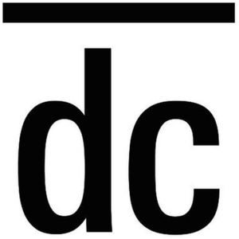

Trade Mark Journal No.2025/017 25 April 2025
WO0000001834217 (19)
Office of origin: European Union Intellectual Property Office (EUIPO)
Date of International Registration:6 November 2024
Date of designation in the UK:
6 November 2024

International priority date claimed: 3 September 2024
(European Union Intellectual Property Office (EUIPO))
(019074289)
- Class 19
- Building materials not of metal; rigid pipes, not of metal, for building; asphalt, pitch and bitumen; transportable buildings, not of metal; monuments, not of metal; tiles, floor tiles, paving stones, flagstones, rims, baseboards and in general materials for covering walls, roofing and flooring materials, non-metallic materials, especially ceramics, porcelain, stoneware, marble, stone, granite, slate, clay, glass or wood; floor tiles not of metal; jalousies, not of metal; window glass, for building; plate glass [windows], for building; bricks; paving slabs, not of metal; building lumber; marble; wooden materials for paving; potters' clay [raw material]; building panels, not of metal; parquet flooring; paving blocks, not of metal; building paper; fire burrs; building stone; artificial stone; slate; cement slabs; doors, not of metal; wall claddings, not of metal, for building; wall linings, not of metal, for building; furrings of wood; wainscotting, not of metal; floors, not of metal; partitions not of metal; parquet floor boards; floor boards of wood; planks [wood for building]; flashing not of metal for building; ceilings, not of metal; pantiles; terra cotta; roofing tiles not of metal; earth for bricks; casement windows, not of metal; sandstone tubes; chimney shafts, not of metal; insulating glass [building]; windows, not of metal; window glass, except glass for vehicle windows; joists, not of metal; beams, not of metal; gypsum; luminous paving stones; tar; asphalt; limestone; reeds, for building; gutters not of metal; chimney pots, not of metal; wood pulp board, for building; paperboard for building; pre-fabricated houses [kits] not of metal; cement; chimneys, not of metal; buildings, not of metal; plywood; shutters, not of metal; agglomerated cork; rock crystal; quartz; shuttering, not of metal, for concrete; coatings [building materials]; duckboards, not of metal; geotextiles; felt for building; granite; gravel; concrete; sheets and strips of synthetic materials for horizontal road signage; non-luminous and non-mechanical signs, not of metal.
DECOCER, S.A.
Representative: DEMARKS&LAW, Cirilo Amorós, 57, 3, E-46004 Valencia, SPAIN